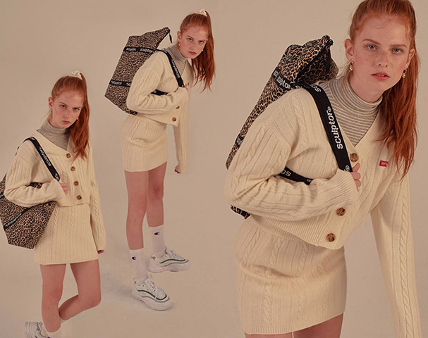

- 
-
lookbook theme #1
SCULPTOR THINGS BE YOUR MUSE"Mundo Primaria te su colección de audiocuentos, Todo un surtido de audiocuentos con valores para que los pequeños se lo pasen bien y a la vez aprendan." también los más atrevidos podrán disfrutar de audiocuentos de terror para niños